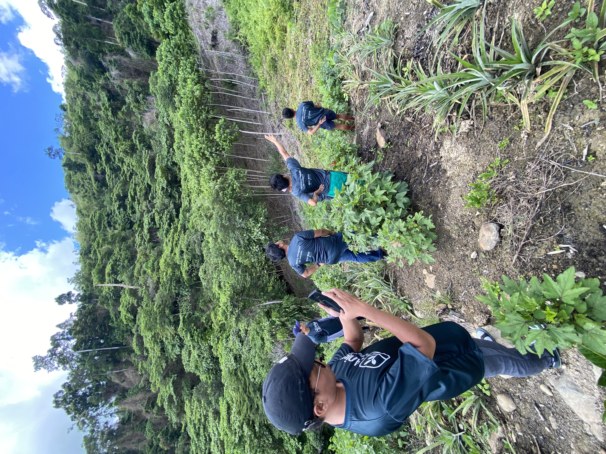
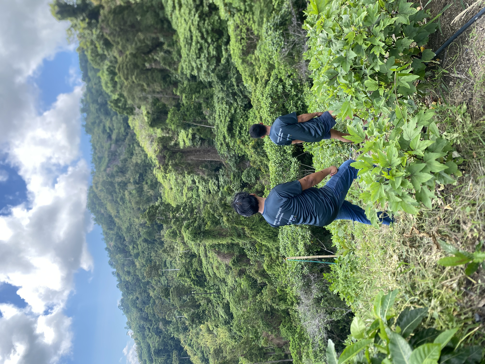

About Aniya
Aniya is a web-enabled agri-tech platform that allows anyone—wherever they are—to plant real coffee trees, support real Filipino farmers, and participate in sustainable agriculture. By leveraging regenerative farming principles and modern technology, Aniya bridges the gap between everyday people and real-world impact in farming.



Rooted in transparency, inclusion, and environmental healing, Aniya is more than just a platform—it’s a movement. Through our partnership with Farm To Cup Philippines, and a regenerative farm estate in Sitio Dueg, San Clemente, Tarlac, we are building a model that connects tech-driven accessibility with soil-rooted sustainability.
We make it easy to start, track your farm's progress, receive updates with photos, and even share in the harvest. Whether you're living in the city or just want to make a difference, Aniya helps you connect to the land and grow something that matters.
"Aniya" comes from the Filipino words "ani" (harvest) and "niya" (yours), meaning the harvest is yours.

About Farm To Cup Philippines
At Farm To Cup Philippines, we’re reimagining what it means to grow and educate through coffee.
Rooted in the belief that knowledge and farming go hand in hand, Farm To Cup combines hands-on agriculture with real opportunities for learning and livelihood. We work directly with Filipino communities to grow coffee that is both high-quality and community-driven — while also empowering future growers through education.
As an official training hub in partnership with TESDA, Gintong Aral Skills Development Academy, and PNC-TVI, we’ve hosted free community-based training workshops and helped shape national coffee curricula. With support from international partners like the US Department of Agriculture, PhilCAFE, ACDI/VOCA, and World Coffee Research, we continue to grow our capacity to lead, train, and serve.
Whether on the farm or in the classroom, everything we do is grounded in our vision of People, Planet, and Prosperity. We believe that a better future for Philippine coffee starts with empowered farmers, educated communities, and sustainable practices that last.